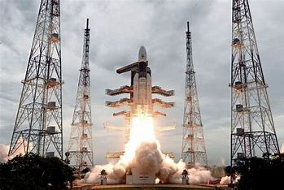

India is on MOON

India landed a robotic spacecraft on the moon Wednesday, a feat that came just days after a Russian vehicle crashed into the surface after firing its thrusters for too long.
India’s spacecraft, without any astronauts on board, landed at about 8:30 a.m. Eastern time near the moon’s south pole, an area that several nations covet because it contains water in the form of ice in permanently shadowed craters.
Tech is not your friend. We are. Sign up for The Tech Friend newsletter.
Shortly after the lander touched down, the Indian space agency released a photo of the lunar surface taken from the craft but did not provide details about the health of the vehicle. Late Wednesday, it reported that the rover the spacecraft had been carrying had deployed. “India took a walk on the moon!” the space agency posted on social media. It added Thursday morning that, “all activities are on schedule. All systems are normal.” Plans call for the rover to operate for about 14 days to study the composition of the moon’s soil and rocks.